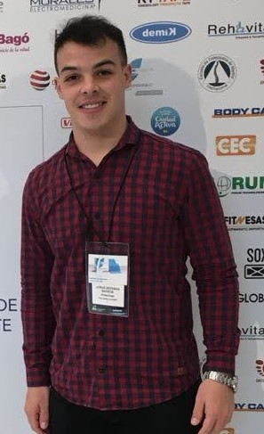

Nuestro profesional
Lic. Barros J. Esteban MP 525
Egresado de la prestigiosa Universidad Nacional de Córdoba, el Lic. Barros Jorge Esteban es un profesional que se ha dedicado a la excelencia y la innovación en la terapia física. Su experiencia abarca desde la residencia en el prestigioso Sanatorio Allende en Córdoba, donde se especializó en terapia física, hasta su actual posición en el Centro Médico Medifam en la Rioja Capital, donde continúa su compromiso con la salud y el bienestar de sus pacientes.
Durante los años 2021 y 2022, el Lic. Esteban formó parte del Instituto Giorgii, un centro de rehabilitación kinesica integral reconocido por su enfoque holístico y personalizado.
En 2022, el Lic. Esteban expandió su experiencia al ámbito deportivo, trabajando con el Cuerpo Médico del Club Atlético Riachuelo en la Liga Nacional de Básquet, y más tarde con el Club Atlético Riojano en la Liga Masculina de Fútbol, demostrando su versatilidad y capacidad para adaptarse a las exigencias del deporte de alto rendimiento.
Además, su trabajo en Hidrokine entre 2022 y 2024 destaca su habilidad para incorporar terapias innovadoras como la hidroterapia, mejorando la calidad de vida de sus pacientes a través de métodos terapéuticos avanzados.
El Lic. Barros J Esteban es un kinesiólogo que no solo posee una sólida formación académica y profesional, sino que también muestra un compromiso genuino con cada paciente, ofreciendo tratamientos personalizados que reflejan su pasión por la kinesiología y la rehabilitación física.
Curriculum Vitae
2021 - 2022 RESIDENCIA EN SANATORIO ALLENDE, SERVICIO DE TERAPIA FISICA. CORDOBA CAPITAL, ARGENTINA.
2021 - 2022 INSTITUTO GIORGII, CENTRO DE REHABILITACION KINESICA INTEGRAL. CORDOBA, CAPITAL. ARGENTINA
2021 CRESER KINESIOLOGIA. CORDOBA, CAPITAL. ARGENTINA
2022 CIMA KINESIOLOGIA. LA RIOJA, ARGENTINA.
2022 CUERPO MEDICO CLUB ATLETICO RIACHUELO. LIGA NACIONAL DE BASQUET.
2022 - 2024 HIDROKINE. LA RIOJA, ARGENTINA.
2022 - Actualidad CUERPO MEDICO CLUB ATLETICO RIOJANO, LIGA MASCULINA DE FUTBOL
2024 - Actualidad CENTRO MEDICO MEDIFAM